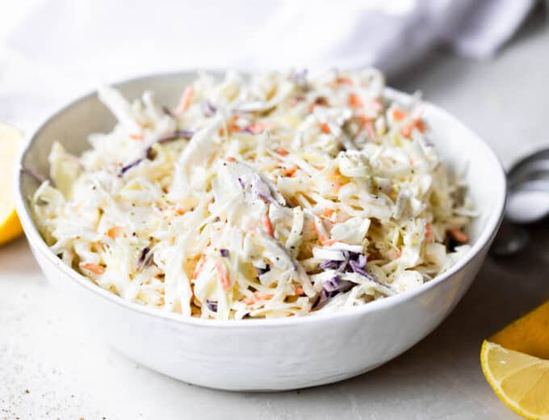

Southern Coleslaw

A delicious side dish for all seasons
This delectable slaw is perfect for everything from sandwiches to schnitzel
Ingredients:
- 1 head cabbage, finely shredded
- 2 carrots, finely chopped
- 2 tbsp. finely chopped onion
- 1/2 cup mayonnaise
- 1/3 cup white sugar
- 1/4 cup milk
- 1/4 cup buttermilk
- 2 tbsp. lemon juice
- 2 tbsp. distilled white vinegar
- 1/2 tsp salt
- 1/8 tsp ground black pepper
Instructions:
- Mix cabbage, carrots, and onion in a large bowl. Whisk mayonnaise, sugar,
milk, buttermilk, lemon juice, vinegar, salt, and black pepper in a separate
bowl until sugar has dissolved.
- Pour dressing over cabbage mixture and mix thoroughly. Cover and refrigerate
at least 2 hours. Mix again before serving.
- Enjoy!